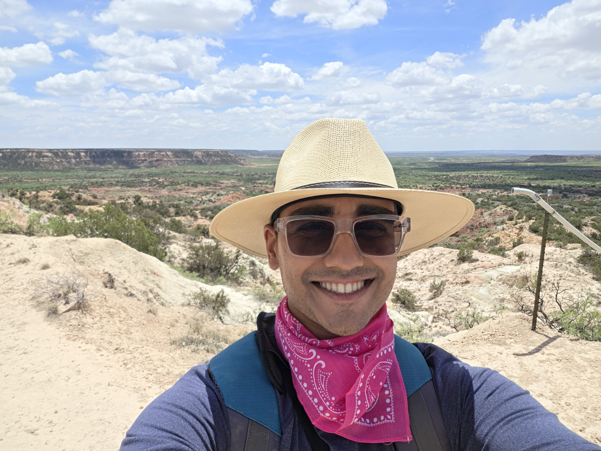

Video
Production, editing, documentation, and storytelling for long-form and short-form content.
SCIENCE COMMUNICATION
My media background gives me a second toolkit for the same goal: helping people care about the evidence, the process, and the story behind a discovery.
I earned a B.A. in Emerging Media Production and have professional experience in videography, video editing, post-production coordination, digital asset management, public communication, and educational storytelling.
My video work has generated more than 3 million monthly views across multiple platforms.

MEDIA PRODUCTIONProduction, editing, documentation, and storytelling for long-form and short-form content.
Field and documentary photography with an emphasis on showing process and context.
An evolving paleontology-focused science communication project built around accessible storytelling.
FUTURE WORK
My long-term goal is to combine scientific training with strong visual communication so research can reach audiences beyond academic circles.